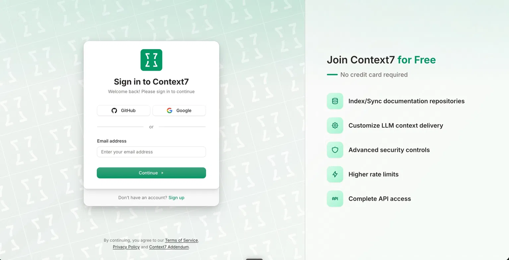
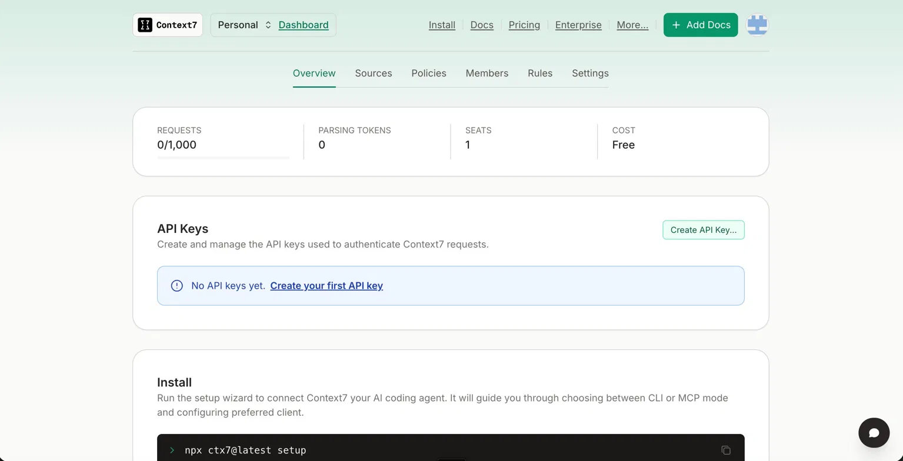
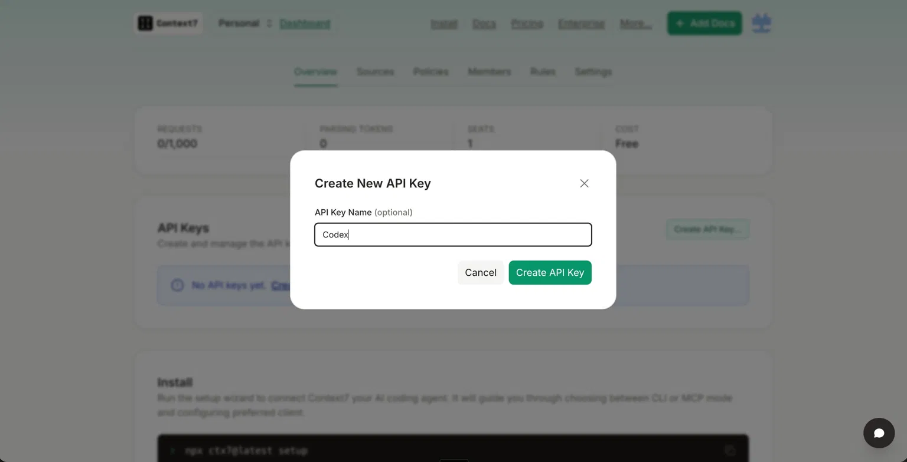
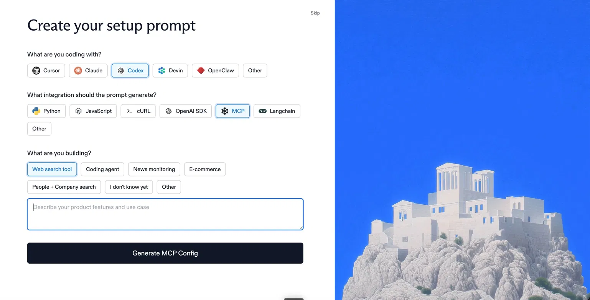
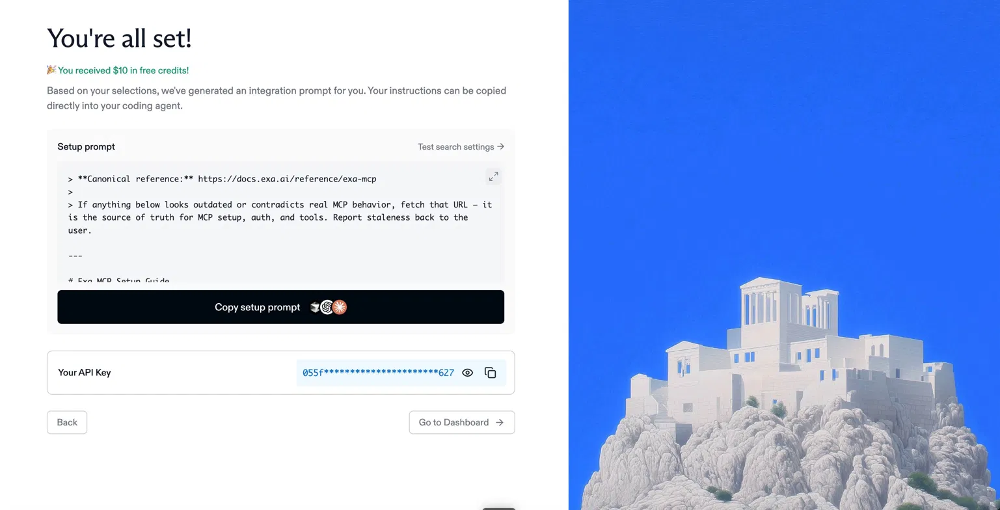
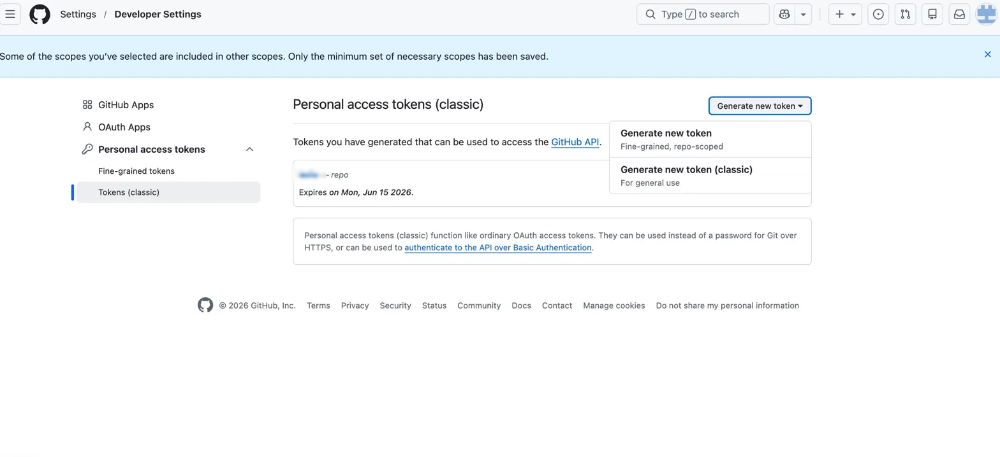
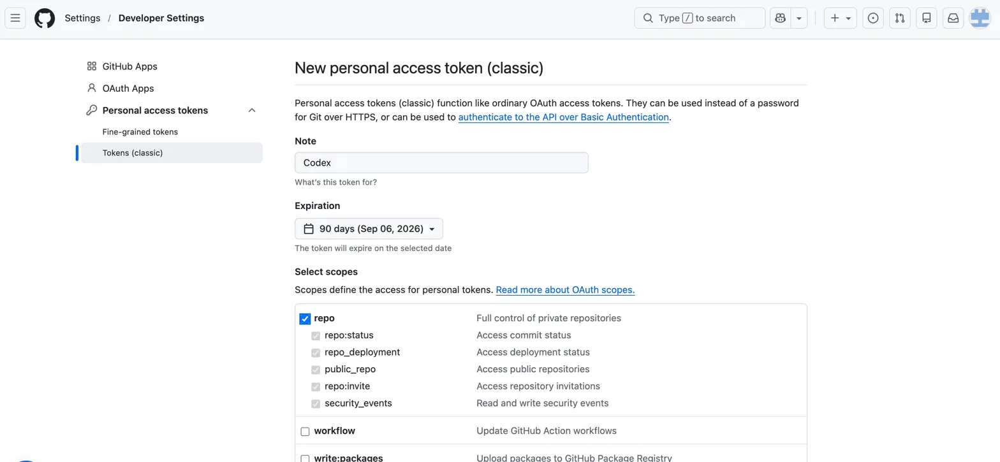

0. はじめに知っておくこと全サービス共通
- キーは発行直後の一度しか全文表示されないことが多いです。表示されたら必ずその場でコピーしてください。
- コピーしたキーは 1Password などのパスワードマネージャーに保管します。
- コードに直書きしない / GitHub にコミットしない / チャットに貼らない。
- 可能なものは有効期限を設定し、用途がわかる名前を付けておくと、後の管理・無効化が楽です。
このページで3つのキーを集め、最後に 本編 Section 06 の置換プロンプトで Codex（
~/.codex/config.toml）にまとめて登録します。先に本編の一括設定でプレースホルダ（YOUR_CONTEXT7_API_KEY 等）を入れておくとスムーズです。1. Context7最新ドキュメントの取得
Context7 は、ライブラリやフレームワークの最新ドキュメントを Codex に読ませる MCP です。GAS / Vercel などの調査で効きます。
- context7.com を開いてサインイン右上の Sign in。

Sign in。GitHub または Google で入れます。 - ダッシュボードの「API Keys」を開くログイン後、Dashboard → API Keys。参考: 公式ガイド。

ダッシュボードの「API Keys」。まだ無ければ「Create your first API key」。 - 「Create API Key」を押す用途がわかる名前（例:
Codex）を付けて Create API Key。合宿は無料枠で十分です。
「Create New API Key」。名前を入れて Create API Key。 - 表示された
ctx7sk-…をコピーして保管これがYOUR_CONTEXT7_API_KEYに入ります。
2. ExaWeb・X検索
Exa は Web や X 由来の情報を探す目です。記事や X 投稿の裏取りに使います。初回はオンボーディングのウィザードに沿って進めると、API キーと「Codex に貼る用のセットアップ手順」が同時に手に入ります。
- dashboard.exa.ai を開いてサインアップ／ログインGoogle または GitHub アカウントで入れます。
- 「Create your setup prompt」の項目を選ぶWhat are you coding with? → Codex ／ What integration should the prompt generate? → MCP ／ What are you building? → 用途（例:
Web search tool）。
What are you coding with? = Codex、integration = MCP、用途を選ぶ。 - 「Generate MCP Config」をクリック設定が生成されます。
- 「You're all set!」画面で2つを取得Your API Key → コピーして保管（これがキー本体 =
YOUR_EXA_API_KEY）。Setup prompt（Copy setup prompt）→ Codex に貼り付けて設定できる手順書。
「You're all set!」で Copy setup prompt と Your API Key を取得。初回は $10 の無料クレジット付き。 - 無料クレジット（$10 分）を確認初回付与されます。合宿の試用には十分です。
3. GitHubリポジトリ操作用トークン
Codex から GitHub のリポジトリを読み書きするためのトークンです。本編の設定では Bearer YOUR_GITHUB_TOKEN として渡します。
- github.com/settings/tokens を開くSettings → Developer settings → Personal access tokens。
- 「Generate new token (classic)」を選ぶ右上の「Generate new token」から classic を選択。

「Generate new token」→ Generate new token (classic) を選択。 - Note・Expiration・スコープを設定Note:
Codexなど。Expiration: 30〜90日程度の短め推奨。Select scopes で repo にチェック。
Note（例: Codex）・Expiration を設定し、Select scopes で repo にチェック。 - 「Generate token」を押し、
ghp_…をコピーして保管この画面を離れると二度と表示されません。これがYOUR_GITHUB_TOKENに入ります。